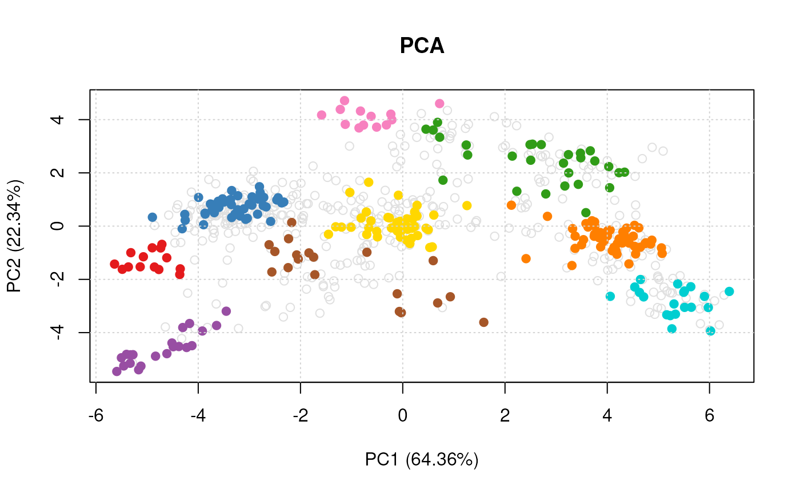

Class SpatProtVis
SpatProtVis-class.RdA class for spatial proteomics visualisation, that upon instantiation,
pre-computes all defined visualisations. Objects can be created with
the SpatProtVis constructor and visualised with the plot
method.
The class is essentially a wrapper around several calls to
plot2D that stores the dimensionality reduction
outputs, and is likely to be updated in the future.
Arguments
- x
An instance of class
MSnSetto visualise.- methods
Dimensionality reduction methods to be used to visualise the data. Must be contained in
plot2Dmethods(except"scree"). Seeplot2Dfor details.- dims
A list of numerics defining dimensions used for plotting. Default are
1and2. If provided, the length of this list must be identical to the length ofmethods.- methargs
A list of additional arguments to be passed for each visualisation method. If provided, the length of this list must be identical to the length of
methods.- ...
Additional arguments. Currently ignored.
Slots
vismats:A
"list"of matrices containing the feature projections in 2 dimensions.data:The original spatial proteomics data stored as an
"MSnSet".methargs:A
"list"of additional plotting arguments.objname:A
"character"defining how to name the dataset. By default, this is set using the variable name used at object creation.
Methods
plot:Generates the figures for the respective
methodsand additional arguments defined in the constructor. If used in an interactive session, the user is prompted to press 'Return' before new figures are displayed.show:A simple textual summary of the object.
See also
The data for the individual visualisations is created by
plot2D.
Examples
library("pRolocdata")
data(dunkley2006)
## Default parameters for a set of methods
## (in the interest of time, don't use t-SNE)
m <- c("PCA", "MDS", "kpca")
vis <- SpatProtVis(dunkley2006, methods = m)
#> Producting PCA visualisation...
#> Producting MDS visualisation...
#> Producting kpca visualisation...
vis
#> Object of class "SpatProtVis"
#> Data: dunkley2006
#> Visualisation methods: PCA, MDS, kpca
plot(vis)


 #> Done.
plot(vis, legend = "topleft")
#> Done.
plot(vis, legend = "topleft")

 #> Done.
## Setting method arguments
margs <- c(list(kpar = list(sigma = 0.1)),
list(kpar = list(sigma = 1.0)),
list(kpar = list(sigma = 10)),
list(kpar = list(sigma = 100)))
vis <- SpatProtVis(dunkley2006,
methods = rep("kpca", 4),
methargs = margs)
#> Producting kpca visualisation...
#> Producting kpca visualisation...
#> Producting kpca visualisation...
#> Producting kpca visualisation...
par(mfrow = c(2, 2))
plot(vis)
#> Done.
## Setting method arguments
margs <- c(list(kpar = list(sigma = 0.1)),
list(kpar = list(sigma = 1.0)),
list(kpar = list(sigma = 10)),
list(kpar = list(sigma = 100)))
vis <- SpatProtVis(dunkley2006,
methods = rep("kpca", 4),
methargs = margs)
#> Producting kpca visualisation...
#> Producting kpca visualisation...
#> Producting kpca visualisation...
#> Producting kpca visualisation...
par(mfrow = c(2, 2))
plot(vis)
 #> Done.
## Multiple PCA plots but different PCs
dims <- list(c(1, 2), c(3, 4))
vis <- SpatProtVis(dunkley2006, methods = c("PCA", "PCA"), dims = dims)
#> Producting PCA visualisation...
#> Producting PCA visualisation...
plot(vis)
#> Done.
#> Done.
## Multiple PCA plots but different PCs
dims <- list(c(1, 2), c(3, 4))
vis <- SpatProtVis(dunkley2006, methods = c("PCA", "PCA"), dims = dims)
#> Producting PCA visualisation...
#> Producting PCA visualisation...
plot(vis)
#> Done.